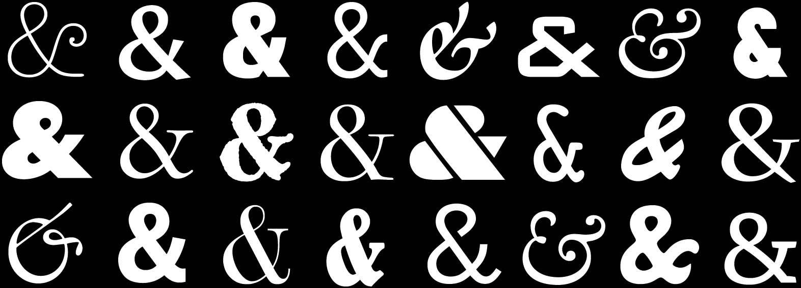

The
The ampersand is one of the jauntiest characters. Font designers often use it as an opportunity to show off. Traditional ampersands take the shape of the letters

Ampersands are completely correct when they’re part of a proper name (
Otherwise, ampersands should be handled like any other contraction: the more formal the document, the less they should be used. Here and there, but not everywhere.